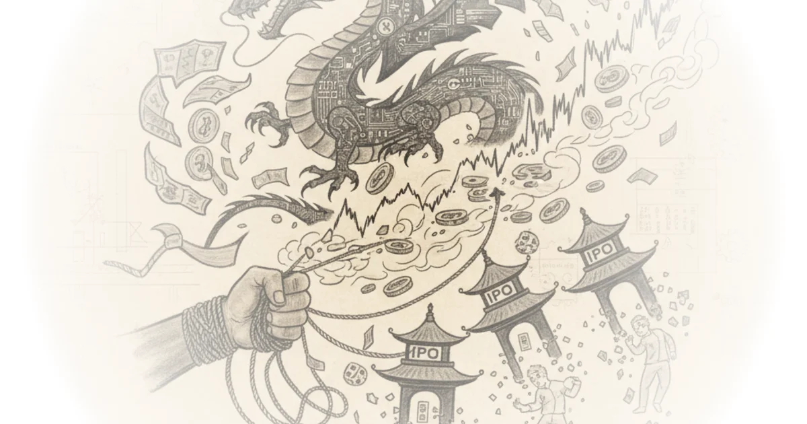

A disturbing new trend is emerging from the world of Chinese finance: companies listed on American exchanges are deliberately copying one of America's most ridiculous innovations. They've taken the American meme stock phenomenon — the wild speculation around companies like GameStop and AMC — and turned it into something far more insidious.
This summer, a group of US-listed Chinese stocks collapsed in value after being promoted on social media. The damage: $13 billion in investor losses. This isn't just a few bad investments. It's a systematic fraud operation dressed up as a meme stock craze.

The Rise of the Dork Stocks
In 2021, the American meme stock craze exploded with GameStop and AMC. By 2022, even the meme-to ETF — yes, it's a real investment vehicle — collapsed from $70 per share to $25. But this summer saw something different: a crop of newfangled American stocks dubbed "dork stocks" by Investors Business Daily.
Crispy Cream, Open Door, Rocket Companies, and Kohl's — whose ticker symbols actually spelled out "dork" — cost meme investors $13 billion as they rose and fell, entertaining the rest of us. These were wholesome American fun. American stocks pumped by American enthusiasts on American message boards, traded on American exchanges.
But while everyone was distracted by these dorks, something darker was happening in plain sight.
The Chinese Knockoffs
Seven NASDAQ-listed stocks quietly collapsed by 80% or more over just a few trading sessions: Concord International, Austin Technology, Top King Win, Skyline Builders, Everbrite Digital, Park Ha, Biological Technology, and Feton Holdings.
Why had no one heard of these stocks? They were Chinese knockoffs — promoted by foreigners on WhatsApp groups, Reddit message boards, Facebook, and the app formerly known as Twitter. The telltale signs were everywhere: no hedge fund managers accused of being short, no charismatic CEOs live streaming in their underwear, no thousands of pages of online rants describing due diligence.
The number eight is considered lucky in China because it represents wealth. But there were only seven Chinese meme stocks — a sloppy detail that betrayed the imitation.
These were low-quality knockoffs dressed up as legitimate investment opportunities — and they wiped out $3.7 billion, which isn't even close to the $13 billion loss on the dork stocks.
The Financial Times reported this collapse in recent weeks, noting it was a low-quality ripoff of an American innovation. The FBI has seen a 300% year-on-year increase in victim complaints referencing pump and dump stock fraud — investors being targeted on social media by people impersonating legitimate brokerage firms or well-known stock analysts.
How the Scam Works
According to the Financial Times, retail investors lost their life savings after clicking Facebook ads that added them to WhatsApp groups discussing investments. One executive coach described clicking a Facebook ad seemingly endorsed by a well-known American TV pundit — only to find the group members were almost entirely fake.
The WhatsApp groups had around 40 members each, most with British or American phone numbers, appearing to be run by legitimate US brokers. One victim explained that some group members accused him of being an AI bot early on, forcing him to defend himself from being kicked out for the wrong reasons.
All the information in these groups came from fake participants. The only real people were the ones being scammed.
A man named Matthew Michael runs a business called Investor Link. He noticed unusual stock market activity around certain US-listed micro cap stocks and began contacting the Financial Times along with American regulators and exchanges. His analysis identified clusters of coordinated activity on Reddit happening simultaneously with stock pumps in WhatsApp groups — many Reddit accounts based in Russia and Iran.
The FBI describes these as pump and dump schemes: perpetrators impersonate legitimate brokerage firms or well-known stock analysts, secretly control a large volume of a low-price stock, coordinate to inflate its price by encouraging investment club members to purchase shares over weeks or months, then dump their stock at a profit.
The Most Ridiculous Example
One stock appears to have been pumped up the most: Regen Cell Biosciences. Its price was pumped up an impressive 60,000% — giving the company a market value of $38 billion before the dump.
For context, that's almost four times the size of Moderna. Bigger than Baxter, bigger than Biogen, bigger than Bayer — companies you've actually heard of.
The website for Regen Cell Biosciences features graphics that appear to be neurons with the slogan "natural formula that works." There's a small red flag in the bottom corner reading "error for site owner invalid domain" — not exactly confidence inspiring. The page scrolls down to reveal what looks like a collection of herbs and spices: coriander seeds, sliced cinnamon twigs, dried turmeric, cloves, green cardamom, vanilla pods.
The about section describes treatments for ADHD and ASD (autism spectrum disorder). The founder has a brain theory related to blood flow and neurotransmitters — he went to Berkeley with degrees in electrical engineering, nothing to do with cooking or healthcare. He's now dedicating his efforts to treating people afflicted with incurable diseases.
The patient case studies include testimonials: one COVID survivor claimed the herbs worked after taking them. Another recommended it but noted it tastes bitter. The founder posted a video of himself riding a motorbike claiming the cure works.
If they sort out the flavor, it'll be even better — no wonder this stock went up 60,000%.
The company lost $4.3 million in 2024, an improvement from $6.1 million the prior year. It's difficult to see how this justifies a $38 billion market cap when they're selling supermarket herbs as medicine and still losing money.
The Regulatory Response
NASDAQ announced it is seeking to tighten rules for small Chinese stocks, stating these listings have become a hotbed for fraud and manipulation. The exchange proposed requiring companies principally operating in China to raise at least $25 million in an IPO to go public on NASDAQ, increasing the minimum float for future listings to $15 million, and accelerating delistings for companies that no longer meet standards.
These changes require SEC approval before implementation. Given the 300% increase in fraud complaints, one would hope regulators are moving quickly — but the SEC has lost between 15 and 19% of full-time headcount in key divisions this year.
A record number of Chinese companies applied to list on US exchanges both this year and last, with China and Hong Kong-based companies dominating the US micro cap IPO market. The PCAOB — the US audit regulator threatened with being shuttered earlier this year — has faced difficulties inspecting many Chinese accounting firms that audit US-listed companies.
Bottom Line
The core of this story is genuinely disturbing: foreign actors deliberately exploited America's meme stock culture to defraud retail investors. The funniest part is how poorly executed it was — seven stocks instead of eight, a website selling supermarket spices as cures for incurable diseases, and $38 billion in market value for a company losing millions.
What makes this different from regular pump and dump schemes isn't just the scale — it's that foreign operators specifically targeted American retail investors using America's own social infrastructure. They weaponized our love of ridiculous stocks against us.
The SEC's proposed rule changes are a start, but with reduced staff and increased fraud complaints, enforcement will be difficult. Investors should remain skeptical of any stock promoted through WhatsApp groups or anonymous Reddit accounts — especially when the companies won't survive basic scrutiny.